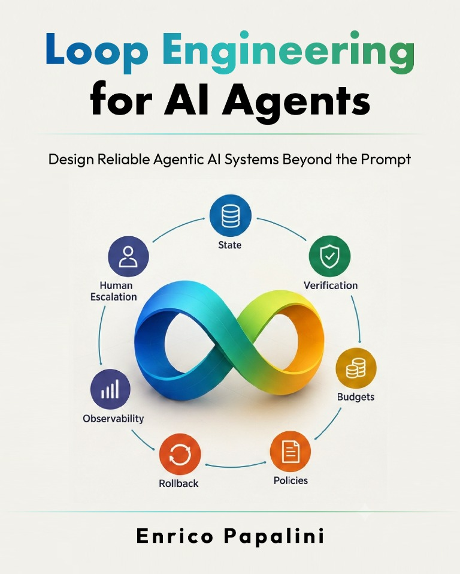

V05
Loop Engineering for AI Agents
Publication details and chapter records. Follow a chapter to explore its topics and related reading.

V05 · Book and chapters
Loop Engineering for AI Agents
Design Reliable Agentic AI Systems Beyond the Prompt
Earlier self-published edition and archived chapter records
An engineering guide to designing a bounded agent loop, protecting its verification, and measuring the cost of the outcome it accepts.
Chapter titles, section references and starts from the author's final Packt print interior (Contents pp. v–x, Preface pp. xii–xiii); titles cross-checked against the published table of contents. Page numbers are the supplied print interior's printed folios. Retail ISBNs refer to the published edition.
Contents
- Loop Engineering for AI Agents: A Critical Assessment · p. 3
The chapter traces the transition from prompting to a persistent loop, with a worker that proposes changes and an independent evaluator that decides when to accept them.
- The Organization Becomes a Loop · p. 37
The chapter assigns ownership, verification and escalation responsibilities to teams, compares three operating models and examines what changes when governance moves into the runtime.
- The Economics of Loop Engineering · p. 67
The chapter costs an accepted outcome, including review and retries, and uses a regulated maintenance example to compare local speed with delivery throughput.
- The Ralph Loop: Persistent Progress Through Fresh Context · p. 101
The chapter follows one work item through a fresh context, an external plan, a verifier and a checkpoint. It compares shell, stop-hook and editor-driven variants and describes when to escalate.
- Building a Full Local AI Loop · p. 133
A local reference implementation connects the model runtime, durable plan, protected verifier, retry and recovery policy, observability and human authority.
- Choosing the Right Loop · p. 185
The chapter matches an observed failure to the smallest suitable mechanism and tests the selection framework on a customer-support case involving retrieval, checks, budgets and escalation.
Topics across the book
- Long-running agent execution · Covered in chapters 1, 4.
PACKT:C01, PACKT:C04 - Independent verification and oracles · Covered in chapters 1, 5, 6.
PACKT:C01, PACKT:C05, PACKT:C06 - Agent context and persistent memory · Covered in chapters 1, 4.
PACKT:C01, PACKT:C04 - Delegated authority and action budgets · Covered in chapters 1, 2, 5, 6.
PACKT:C01, PACKT:C02, PACKT:C05, PACKT:C06 - Ownership and knowledge transfer · Covered in chapter 2.
PACKT:C02 - Specifications and governance · Covered in chapter 2.
PACKT:C02 - Human-agent collaboration · Covered in chapter 2.
PACKT:C02 - Economic costs and return · Covered in chapters 3, 6.
PACKT:C03, PACKT:C06 - Output versus shipped value · Covered in chapter 3.
PACKT:C03 - Review capacity and maintainers · Covered in chapter 3.
PACKT:C03 - Agent failure and escalation · Covered in chapters 4, 5, 6.
PACKT:C04, PACKT:C05, PACKT:C06 - Architecture and modularity · Covered in chapter 5.
PACKT:C05 - Operational diagnosis and recovery · Covered in chapter 5.
PACKT:C05
Earlier volumes this book builds on
- Non-Deterministic Autonomous Coding Agents: Building Self-Improving Systems That Ship While You Sleep · The author identifies the agentic foundations of Non-Deterministic Autonomous Coding Agents as a starting point for this book.
Author-supplied Packt interior, copyright page (unnumbered), paragraph above the ISBN and disclaimer.
Earlier work named in this book
- Non-Deterministic Software Engineering (work) · The author credits the engineering principles of Non-Deterministic Software Engineering. The copyright page gives no edition or ISBN.
Author-supplied Packt interior, copyright page (unnumbered), paragraph above the ISBN and disclaimer.
Earlier edition
- Non-Deterministic Loop Engineering: Design Reliable Agentic AI Systems Beyond the Prompt · The author designates the Packt book as the current Loop Engineering catalogue entry.
Author instruction and the two edition records
Discussed in another book’s preface
- Engineering Software with Agentic AI: Reliable Change with Coding Agents · Explains how the harness controls worker state, tools and attempts; ESA documents the engineer’s decisions at those boundaries.
Preface, “How this volume fits the series”, pp. v–vi
Cited in
- Engineering Software with Agentic AI · Chapter 9 · Review, integrate and release with evidence · The glossary supplies the term time-of-check/time-of-use for a changed release premise.
ESA §9.10; Packt glossary - Engineering Software with Agentic AI · Chapter 10 · Evolve with compatible history · The glossary supplies the term time-of-check/time-of-use for a precondition that changes before an external effect.
ESA §10.8; Packt glossary